Yes, and probably all of them.
Table 1: Original images and their classification results from algorithms [1-3].
Labeled as (0946,0946,0946)
with P = (0.99,0.97,0.98) |
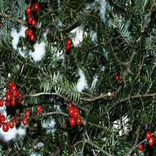
Labeled as (0990,0990,0990)
with P = (0.99,0.87,0.99) |
Labeled as (0873,0873,0873)
with P = (0.99,1.00,1.00) |
Labeled as (0834,0914,0537)
with P = (0.39,0.60,0.34) |
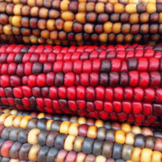
Labeled as (0988,0988,0999)
with P = (0.40,0.70,0.60) |
Table 1 shows the original images used in this experiment, where we tried to hack algorithms [1-3] altogether at the same time.
The 3‑tuples below each image for top-scored labels and their probabilities are shown in the order corresponding to algorithms [1-3] as well.
Generally speaking, all three algorithms accurately classified given images, especially considering their "vocabularies" are limited to the 1,000 ILSVRC classes.
Table 2: Hacked images and their classification results from algorithms [1-3].
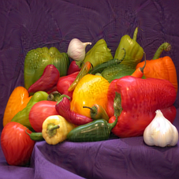
Labeled as (0001,0001,0001)
with P = (0.96,0.97,1.00) |
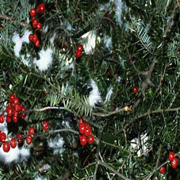
Labeled as (0201,0201,0201)
with P = (0.93,0.96,0.92) |
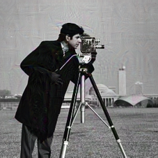
Labeled as (0401,0401,0401)
with P = (0.92,0.90,0.97) |
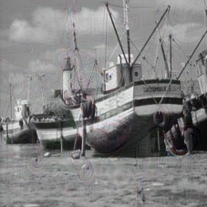
Labeled as (0601,0601,0601)
with P = (1.00,1.00,1.00) |
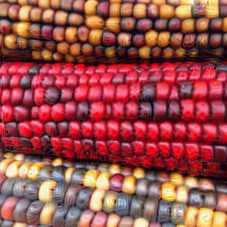
Labeled as (0801,0801,0801)
with P = (0.99,1.00,1.00) |
Using the proposed algorithm, we can effectively and efficiently discover distortions which are hardly perceptible yet causing given images to be misclassified.
As the results shown in Table 2, all original images are successfully hacked into specified ILSVRC classes, with surprisingly high confidences.
Though not directly supported in the web demo, other funny ways of hacking deep learning algorithms, e.g. making one image to be differently misclassified by different algorithms, can be achieved with our algorithm as well.
But, does this mean they are foolish?
This intriguing and almost worrisome phenomenon, though has already had some good progress in analyzing root causes [7,8,9] and deriving solutions [8,9,18], undoubtedly still comprises many unanswered puzzles.
For example, whether the hacked images are completely "hallucinatory" to the deep learning algorithms (i.e. there's no way to fundamentally tell hacked and natural images apart), or just exploiting certain algorithmic shortcomings of them.
Table 3: Feature similarities between natural and hacked images.
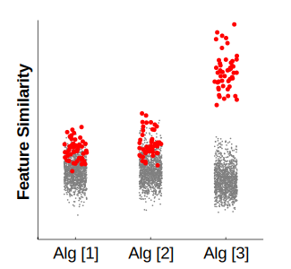
p = (1.9e-23,1.1e-25,8.4e-44) |
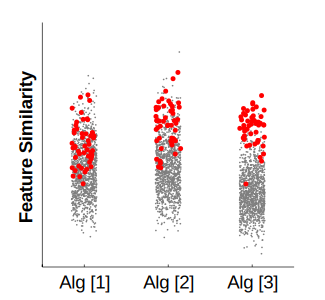
p = (5.1e-10,2.2e-19,2.6e-35) |
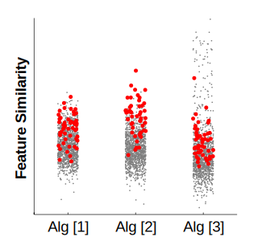
p = (2.9e-09,1.6e-20,5.7e-08) |
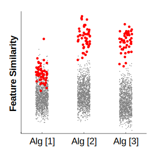
p = (2.5e-29,1.4e-43,1.9e-43) |
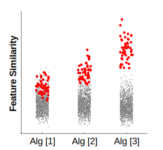
p = (3.3e-26,2.9e-40,8.4e-44) |
Table 3 shows the results of a simple experiment comparing the pairwise Euclidean distances between the penultimate-layer features of natural images (ILSVRC validation set) and hacked images.
The pairwise distances between hacked images and natural images (shown as red dots), compared to pairwise distances among natural images (shown as gray dots), are distributed significantly differently (under two-sample Kolmogorov-Smirnov tests), confirming the possibility of spotting hacked images [8].
More fundamentally, this implies the way the final softmax layers are constructed can be adjusted, e.g. to reveal more dark knowledge [13] or to incorporate advanced class membership modeling [14], to counter this problem in a principled way.
Table 4: Half-hacked images and their classification results from algorithms [1-3].
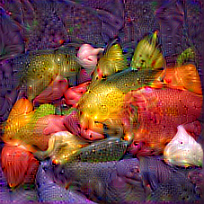
Labeled as (0001,0001,0001)
with P = (1.00,1.00,1.00) |
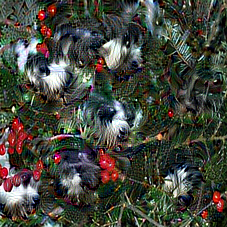
Labeled as (0201,0201,0201)
with P = (0.98,1.00,1.00) |
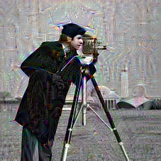
Labeled as (0401,0401,0401)
with P = (0.97,0.84,1.00) |
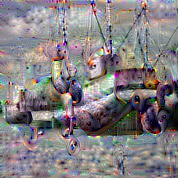
Labeled as (0601,0601,0601)
with P = (1.00,1.00,1.00) |
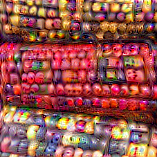
Labeled as (0801,0801,0801)
with P = (1.00,1.00,1.00) |
The algorithm proposed in this project consists of two optimization phases, where an "unconstrained" class probability maximization phase [10] precedes an iterative distortion minimization phase.
Table 4 furthermore shows the half-hacked results from the first optimization phase, in which the visual cues of corresponding object classes are apparent and strong.
Compared to previous works [7-10] where only single networks were targeted at one time, jointly "hacking" multiple architecturally diverse networks actually produces relatively vivid rendering of target objects, which suggests the correct embedding of knowledge about visual objects.
Similar performance advantages of deep network ensembles were reported in [19,20] as well.
Additionally, the correct "placement" of visual features (e.g. the "graduation cap" on top of cameraman's head) also suggests that detailed spatial information is still preserved in the highly compressed features [15-17].
Epilogue
Being one of the main reasons why deep learning algorithms are successful, non-saturating activation function strengthens backpropagation gradients and accelerates the convergence of extremely large neural networks that can in theory embed extremely rich knowledge about the visual world.
However, as also argued by Goodfellow et al. [9], such kind of enforced linearity can be the exact reason why deep learning algorithms are easy to disturb.
While it's fully justifiable to develop methods to "patch" this problem [8,9,18], we also envision a full revision of the deep learning algorithms, which aims to make them (even) more consistent with human vision.
By providing a platform for collecting adversarial examples (i.e. hacked images) and human responses, we hope it can fundamentally help with attaining this goal.